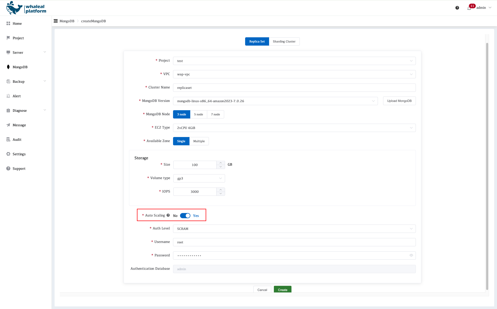
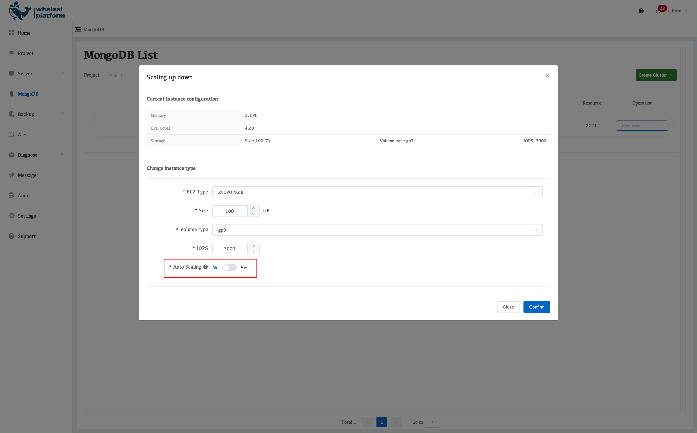

Auto Scaling Policy Overview
Auto Scaling Policy Overview
I. Auto Scaling Switch
When creating a MongoDB cluster, WAP provides an option to Enable Auto Scaling.
- Default value: Disabled (auto scaling is turned off)

When modifying cluster configuration, this parameter can be adjusted dynamically:
- Auto scaling can be enabled or disabled
- Changes take effect immediately

Notes
- MongoDB Replica Sets: Auto scaling is supported
- MongoDB Sharded Clusters: Auto scaling is not recommended
Sharded clusters involve shard count, data distribution, and load balancing. Automatic instance upgrades may lead to resource imbalance or workload fluctuations.
👉 When auto scaling is enabled for a sharded cluster, the platform will display a clear risk warning.
II. Auto Scaling Trigger Conditions (EC2 Instances)
Auto scaling decisions are based on a combined evaluation of CPU, memory, and storage metrics. All metrics must meet their sustained conditions before scaling is triggered.
1. CPU Utilization
-
Trigger Threshold
CPU utilization ≥ 85%
-
Sustained Condition
Within 1 hour,
trigger points exceed 80%
2. Memory Utilization (MongoDB-Specific)
-
Evaluation Basis
MongoDB WiredTiger memory utilization
-
Trigger Threshold
WiredTiger memory usage > 90%
-
Sustained Condition
Within 1 hour, trigger points exceed 80%
Explanation The platform focuses on MongoDB’s actual usable working memory, rather than raw OS-level memory usage.
3. Storage Utilization
-
Trigger Threshold
Disk usage > 85%
-
Post-Scaling Constraint
After expansion, remaining disk space ≥ 40%
-
Sustained Condition
Within 1 hour,
trigger points exceed 80%
III. Scenarios Where Auto Scaling Is Suppressed
Even if resource metrics exceed thresholds, auto scaling will not be triggered in the following cases, to prevent ineffective or incorrect scaling.
1. High CPU Load Caused by Inefficient Queries
-
Detection Criteria
- Large number of full collection scans or sort operations
SCAN_AND_ORDERcount > 10,000
-
Sustained Condition
Within 1 hour,
trigger points exceed 80%
Explanation This scenario is typically caused by missing indexes or inefficient queries. Scaling up resources cannot fundamentally resolve the issue. Query and index optimization should be prioritized.
IV. Auto Scaling Upgrade Strategy (EC2 Instance Types)
When scaling conditions are met and no exclusion rules are triggered, WAP automatically upgrades to the next EC2 instance size according to the following rules:
| Current Spec | Upgraded Spec |
|---|---|
| 2C / 4GB | 4C / 8GB |
| 4C / 8GB | 8C / 16GB |
| 8C / 16GB | 16C / 32GB |
| 16C / 32GB | 32C / 64GB |
| 32C / 64GB | 64C / 128GB |
| 64C / 128GB | 128C / 256GB |
| 128C / 256GB | 128C / 512GB |
The scaling process is fully automated by WAP and includes:
- EC2 instance resizing
- Rolling service restarts (replica set mode)
- Business impact minimization
V. Query Scan Metrics (Used for Scaling Decisions)
If the following metrics exceed thresholds, auto scaling will be suppressed.
1. SCANNED / RETURNED
-
Definition
Number of index entries scanned vs. documents returned per unit time
-
Data Source
totalKeysExaminedfrom MongoDBexplain()output -
Purpose
- Evaluate index hit ratio
- Identify inefficient or missing indexes
2. SCANNED OBJECTS / RETURNED
-
Definition
Number of documents scanned vs. documents returned per unit time
-
Data Source
totalDocsExaminedfrom MongoDBexplain()output -
Purpose
- Detect full collection scans
- Assist in identifying causes of abnormal CPU usage
VI. Policy Summary
Auto scaling is not a universal solution.WAP combines resource metrics, MongoDB internal behavior, and query characteristics to make safe and stable scaling decisions.
This approach avoids ineffective scaling caused by SQL issues, missing indexes, or inefficient query patterns, ensuring system stability while scaling only when it truly adds value.